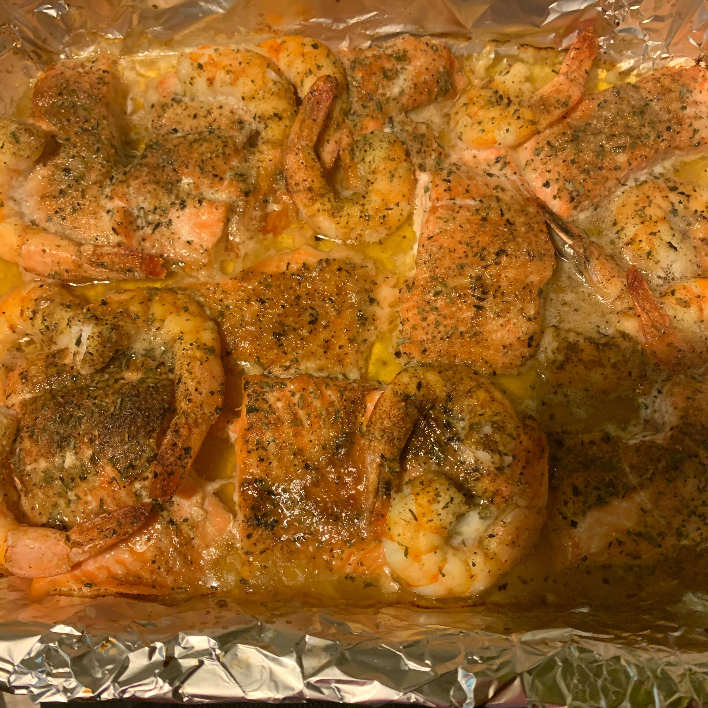

Candied Salmon

Description :
Candied Salmon is famous dish for people that love fish !
The preparation time is of 30 minutes, it will cook during 30 minutes too and
you will be able to feed 6 people !
Ingredients :
- ¼ cup butter
- 1 clove garlic, minced
- 4 (6 ounce) salmon fillets
- 3 large onions, thinly sliced
- 1 cup white vinegar
- 1 cup brown sugar
Steps :
- Preheat the oven to 350 degrees F (175 degrees C). Line a baking sheet with aluminum
foil, and grease the foil with cooking spray.
- Combine the onions, vinegar and brown sugar in a saucepan over medium
heat. Cook, stirring occasionally until the sauce begins to caramelize,
about 15 minutes.
- Melt butter with garlic in a small skillet over medium heat. Lay salmon
fillets on the prepared baking sheet, and brush with garlic butter. Pour
the onion mixture over the fillets.
- Bake for 20 to 25 minutes in the preheated oven, until the fish flakes
easily. Cooking time may vary with the thickness of your fillets.
Go back